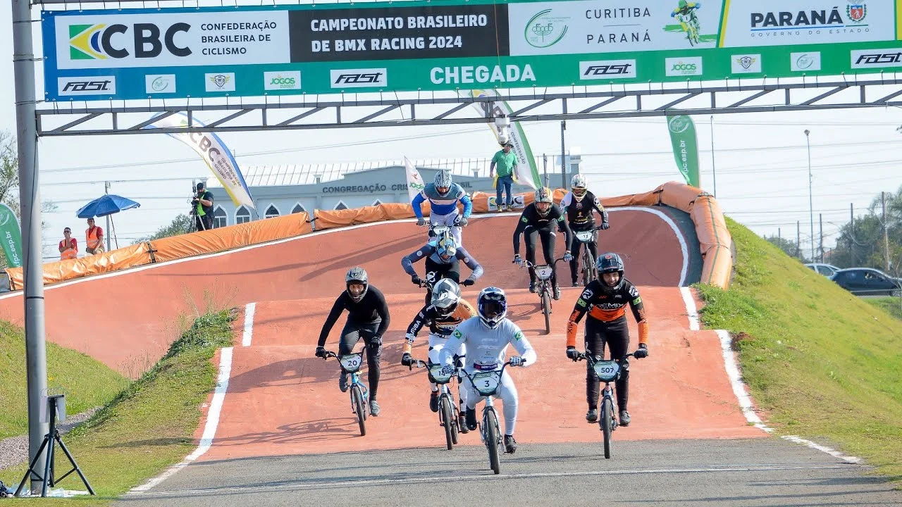
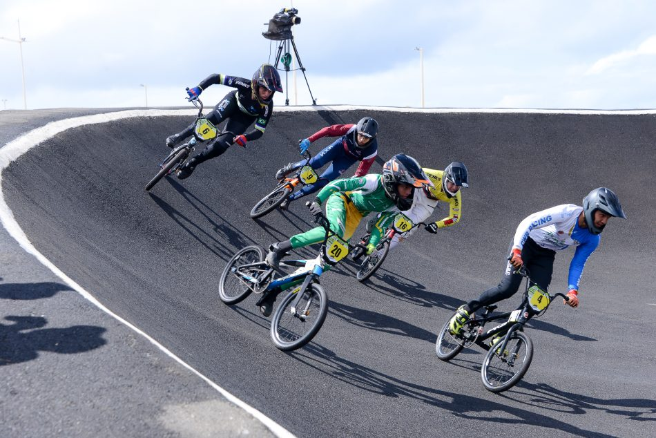
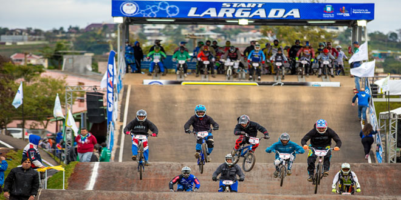
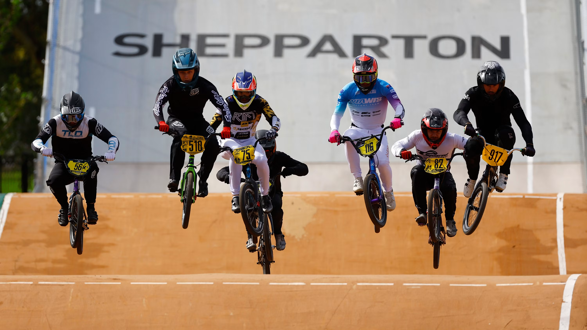

O BMX Racing surgiu no início da década de 1970, na Califórnia, Estados Unidos, quando crianças e adolescentes apaixonados pelo motocross passaram a imitar as corridas utilizando bicicletas, já que muitos não tinham idade ou condições financeiras para praticar o esporte com motocicletas. Eles construíam pistas de terra improvisadas, com rampas, curvas e pequenos obstáculos, onde disputavam corridas que exigiam velocidade, equilíbrio e muita habilidade. O sucesso dessas competições fez com que o esporte crescesse rapidamente, levando à criação de regras, associações e campeonatos oficiais. Durante as décadas de 1980 e 1990, o BMX Racing expandiu-se para diversos países e passou por um grande processo de profissionalização. Em 1981 foi criada a Federação Internacional de BMX (IBMXF), e no ano seguinte foi realizado o primeiro Campeonato Mundial da modalidade. Em 1993, a modalidade passou a ser administrada pela União Ciclística Internacional (UCI), o que fortaleceu ainda mais sua organização e permitiu que o esporte alcançasse reconhecimento mundial. Esse crescimento culminou em 2008, quando o BMX Racing estreou como modalidade olímpica nos Jogos de Pequim, consolidando sua importância no cenário esportivo internacional. No Brasil, o BMX Racing chegou ainda na década de 1970 e ganhou força principalmente nos anos 1980, com a construção de pistas permanentes e a realização dos primeiros campeonatos estaduais e nacionais. Atualmente, o esporte é organizado pela Confederação Brasileira de Ciclismo (CBC), que promove competições em diversas categorias e seleciona atletas para representar o país em eventos internacionais. O Brasil tornou-se uma referência na modalidade, revelando atletas que conquistaram resultados expressivos em Campeonatos Mundiais, Copas do Mundo e Jogos Olímpicos, contribuindo para o crescimento e a popularização do BMX Racing. Hoje, o BMX Racing é praticado em dezenas de países e continua atraindo milhares de atletas e admiradores. As provas são disputadas em pistas com rampas, curvas inclinadas e diversos obstáculos, onde até oito competidores largam simultaneamente em busca da vitória. As corridas, embora durem menos de um minuto, exigem explosão muscular, preparo físico, técnica, concentração e estratégia. Graças à sua velocidade, ao alto nível de competitividade e às emocionantes disputas, o BMX Racing consolidou-se como uma das modalidades mais empolgantes do ciclismo e segue conquistando novos praticantes em todo o mundo.



